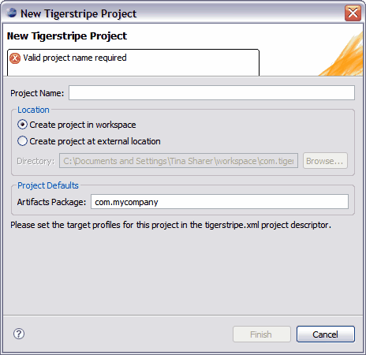

Tigerstripe projects contain the details of a Service Contract Model. More specifically, they contain the following:
The first step in creating a Service Contract is to create a Tigerstripe project to host the model for your Service Contract, and the configuration parameters for your project.
Creating a new Tigerstripe Project is accomplished through the New Tigerstripe Project dialog box. You access this dialog box through the Project icon () on the toolbar.
Note: You must have the Tigerstripe Perspective active for the Project icon to appear.
The following image is a example of the New Tigerstripe Project dialog box:

You must provide the following information to successfully create a new Tigerstripe Project:
- A Valid Project Name: This name cannot include any special characters and cannot be used in another Eclipse workspace. The New Tigerstripe Project dialog box will not accept an invalid name.
- A default package for all newly created Artifacts: This package will be the default package that is used when you create new Artifacts in your project.
For complete instructions to create a new Tigerstripe project, refer to Creating a New Tigerstripe Project.
The corresponding newly created project will appear in the Tigerstripe Explorer, and the Project Descriptor will automatically open automatically in the main editor window.
By default, your project is created within the directory previously identified as the location of the workspace by Eclipse. The name of your project will be used as the target directory within the workspace directory.
Alternatively, you can create your project outside of the current workspace, at any arbitrary location by selecting the Create Project at external location option on the New Tigerstripe Project dialog box. When you select this option, you must provide a valid absolute path to the directory where your new project is to be create.
© copyright 2005, 2006, 2007 Cisco Systems, Inc. - All rights reservedUpon successful creation of a Tigerstripe Project, the Project Descriptor is automatically opens in the main editor window. The following list additional information that you can provide in the Project Descriptor:
- Project Name: This is the full name of your current project. As opposed to the name used to identify the project within Eclipse, the full name can contain any character.
- Project Version: This field is intended to contain the version number for your project. This version number will appear when your project is either exported to a Tigerstripe Module or published to a website.
- Project Description: This field allows you to further describe your project. This description can include any documentation (including HTML) and will be passed to the website created when you publish your project.
Related Topics
Configuring the generated integration profiles
Configuring the dependencies
Customizing the generated code and website